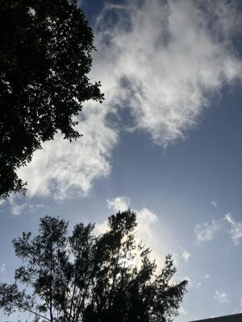
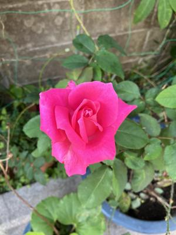
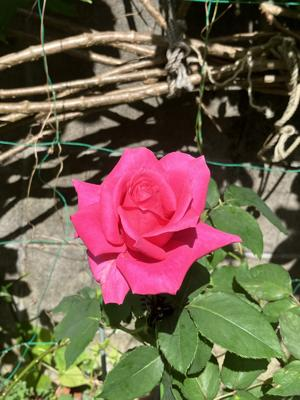

うるがいの話 ある日
最新: 仕事着【うるがいの話 ある日】とは 一日だけのプログです
『うるがいの話』の最新一日だけのプログで、通信料が少なく経済的だ。カニの画像をクリックすると全ての日付が載る『うるがいの話』サイトを表示します
|
|
【うるがいの話】 うるがい(ｳﾙｶﾞｲ urugai)とは、『もずくがに』の名前でとても大きくなります。 |
|---|---|
|
|
【カミマヤーの話】 猫のことを方言でマヤーといいます。カミマヤー（kamimayaa）とは、神の猫のことです。 |
|
【たながぁの音楽】 たながぁ（ﾀﾅｶﾞｰ tanagaa）とは手長えびのことで、何種類かあり大きいのは車 エビぐらいになります。 |

|
【ぶながぁの話】 ぶながぁ(ﾌﾞﾅｶﾞｰ bunagaa)とは、赤い髪の毛、赤い身体、そして身長は１ｍ２０ｃｍ ぐらい、川の蟹を食べているの目撃された。場所は沖縄県国頭郡大宜味村のと ある村僕の隣近所に住んでいる爺さんから、聞いた話です。 |
|
|
【ギーマの話】 ギーマ(giima)とは、山原の里山に咲くスズランに似た、 花を付けます。実は食べられます、 気が付くと口の周りが紫になっています。 |
2024年02月22日 (木）仕事着
21:22

入社から、同じかりゆしウェア一着の若い人は今日は体調不良でお休み。年
休はないので、給料から引かれるのか。普通のスーツ、ワイシャツのおっさ
んが一人（ネクタイはしていない）、普段着が私含め３名。ジーンズで仕事
ができる時代なのだ。オカさんは、ティシャツを薦めると言っていた。ホー
今日も、テンパッテいるオギさんは、研修室には居なかった。火曜日からず
ーっと在宅勤務だと。ヘー、私も在宅勤務可能かしらなんて思ったり。ワイ
シャツのオッサンのパソコンが、端末の設定がまずく、インストールしよう
とするとＰＩＮが来るので、研修が進まない。午前中、関係者でパタパタし
たらしいが、放置されたまま。見かねた、私も対策をしたものの諦めた。ど
うしたオギさん、マズイゼ。

バラは、薔薇である。上は、昨日。下は、今日。

２１時１３分 ビットコインの総資産 ￥２２、４７７（↓１０６）